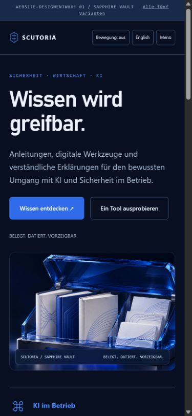
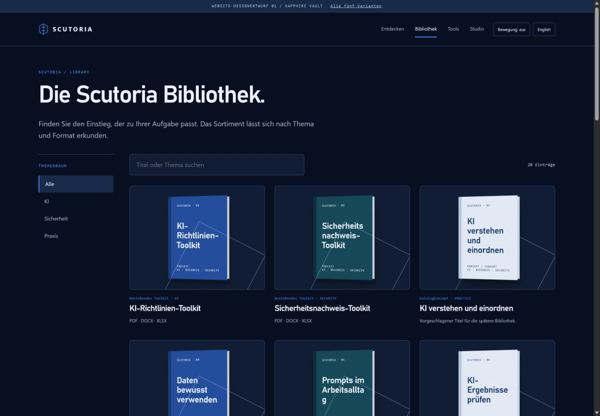
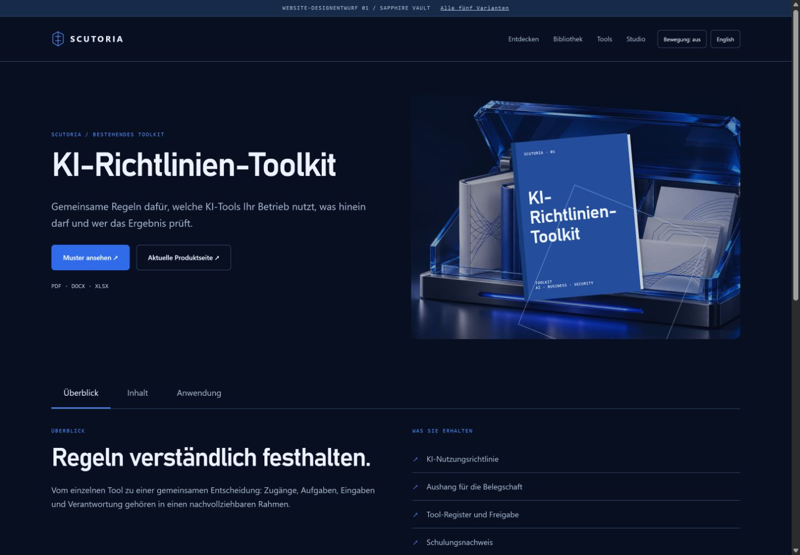
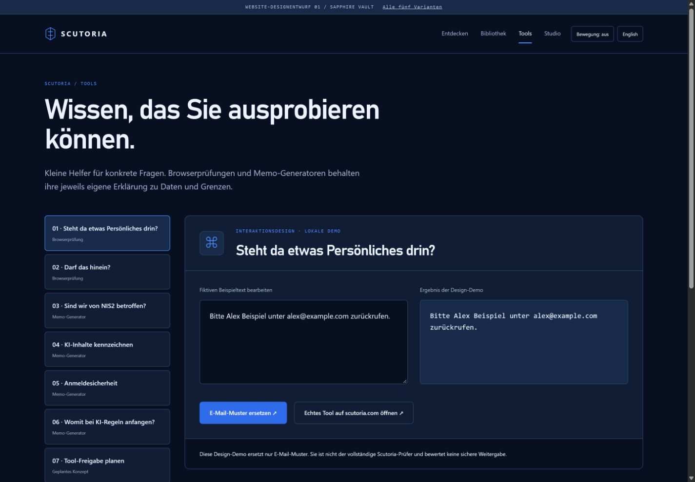
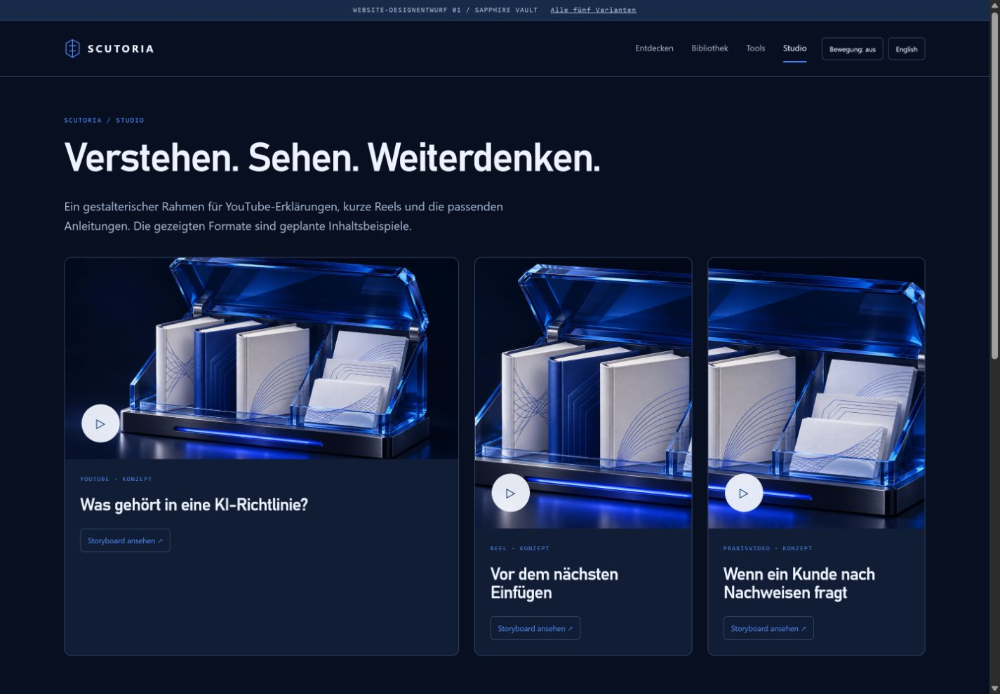

Dunkles Navy, saphirblaues Glas und greifbare Produktinszenierung. Ruhige Premiumwirkung mit räumlicher Tiefe.





Lokaler Designprototyp · neue Titel und Videos sind Konzepte · Animationen in den interaktiven Varianten.